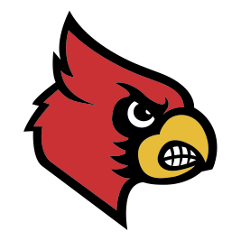
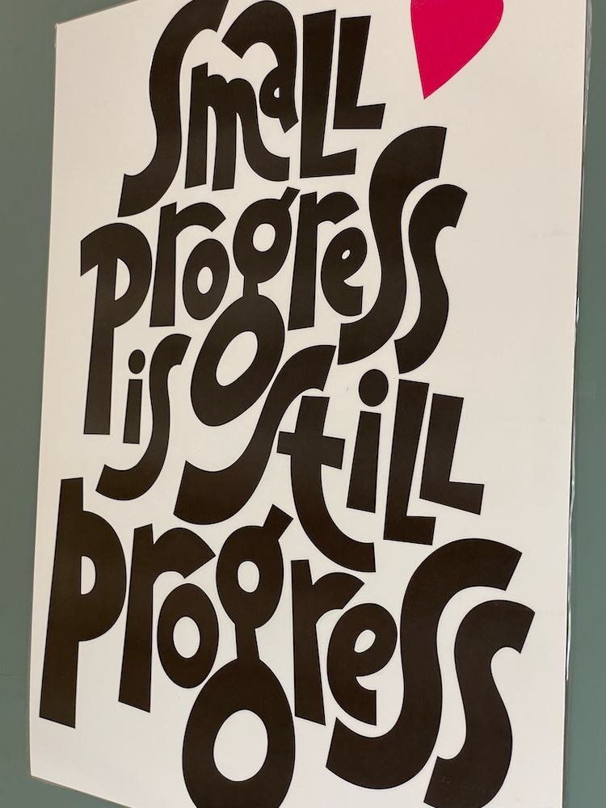
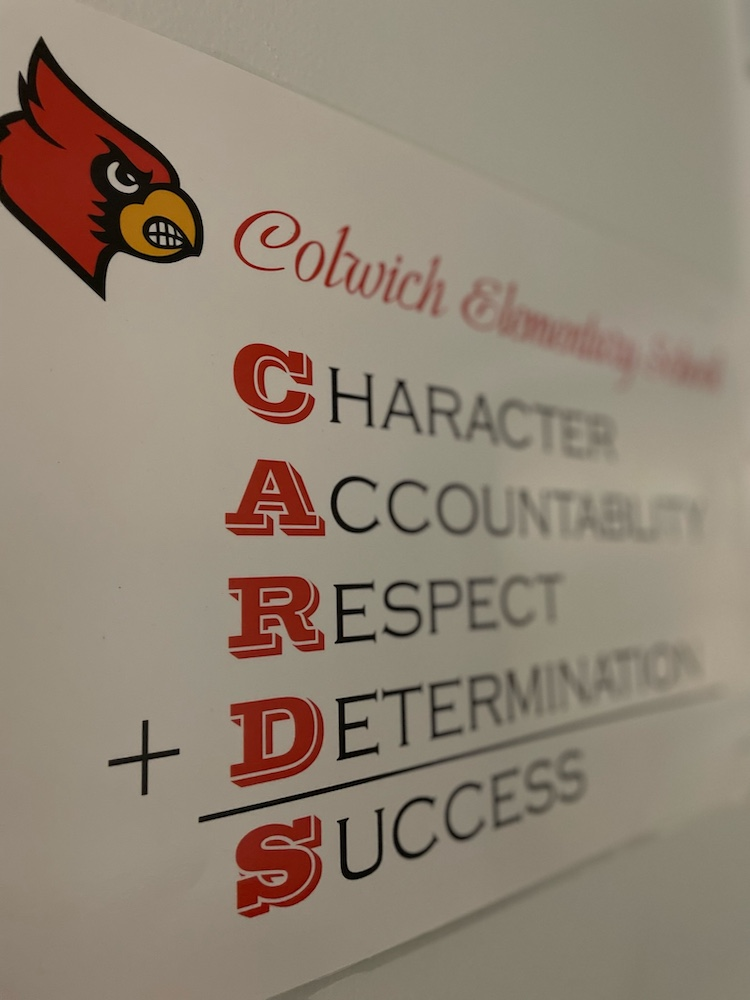
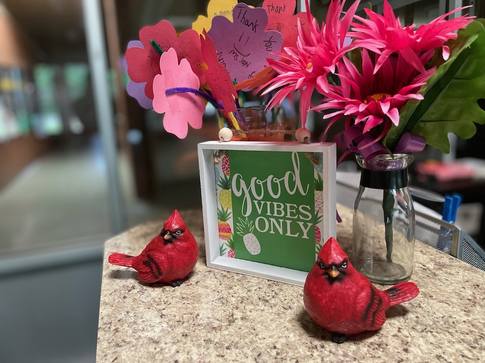
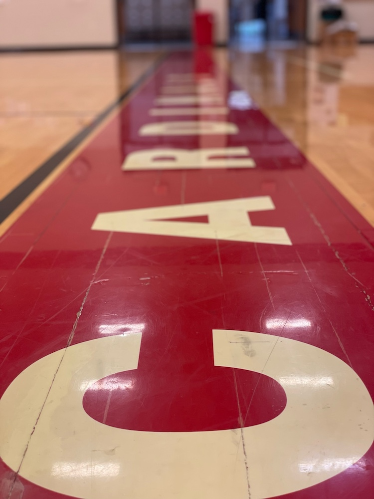
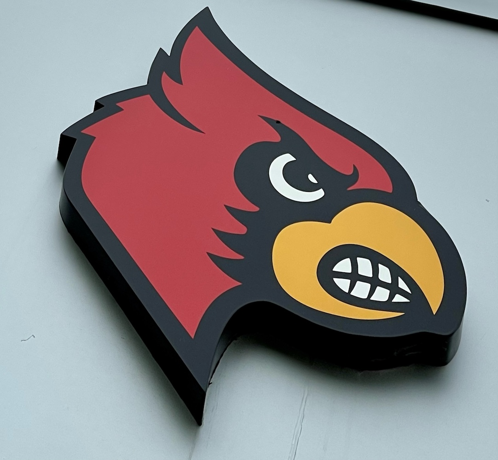

Colwich HSO
Supporting Colwich
Elementary School

The main way to get involved is to register as an active member, which will keep you updated on all upcoming HSO activities.
or Learn More

Colwich HSO

The main way to get involved is to register as an active member, which will keep you updated on all upcoming HSO activities.





Prepare for the new school year with our used uniform sales.
Each year during registration, families can sell outgrown uniforms and shop used ones at a discount.
Join us for tasty treats and socializing before school starts!
Back to School night! After you meet your teachers, stop by for dessert with the CES community. The social typically runs 6:00–7:00 pm—confirm on the calendar.
Our first meeting of the year to kick things off.
Join us at The Nest in Colwich Elementary to plan fall events and fill volunteer roles. Meetings usually run about 6:30–7:45 pm—enter through door 3 on the east side.
When eating at our partner restaurant, a portion of your meal will go back to Colwich HSO.
Eat at Chick-fil-A, mention “Spirit Night” at the register (or use code “community” for mobile orders), and a portion of sales goes back to HSO. Spirit Night hours are typically 3:00–10:00 pm—check the calendar for the date.
Get to know your teachers, school and fellow students at the beginning of the school year.
A short morning social for CES families—grab coffee and a treat and meet other parents in your child’s grade. Typically during the first hour of school (about 7:45–8:30 am). Details on the calendar.
Head on over to Barn'rds where a portion of your meal will go back to Colwich HSO.
Enjoy a meal at Barn'rds and mention Colwich HSO—a portion of sales comes back to the school. Date and details will be announced soon.
We resupply the cart in the teachers lounge with treats, drinks, supplies and more.
HSO restocks the teachers’ lounge appreciation cart with snacks, drinks, and small supplies a few times each year so staff feel supported throughout the school year.
We supply one meal for the teachers conferences as a show of appreciation.
During parent-teacher conferences, HSO provides a meal for teachers as a thank-you. Homemade desserts are always welcome—contact an officer if you’d like to contribute.
HSO will head out and support the community this halloween.
HSO joins the community Trunk or Treat so families can enjoy a safe, costume-friendly evening. Candy and small non-edible donations help stock the giveaways.
This small event recognizes our local veterans.
Students honor local veterans with a ceremony, then HSO hosts a simple reception with coffee and pastries for veterans and their families.
Our second meeting of the year to plan winter events.
Our second meeting of the year focuses on planning winter events and lining up volunteers. Check the calendar for the confirmed date and location.
Join us for local goods and a bake sale this Winter!
A winter marketplace featuring local goods and a bake sale—come shop, snack, and support HSO.
Come out to Veterans Park and Sacred Heart REC for Santa + Activities!
A free, family-friendly community celebration with outdoor fun, crafts, activities, and a visit with Santa. Sponsored with partners across Colwich.
We resupply the cart in the teachers lounge with treats, drinks, supplies and more.
HSO restocks the teachers’ lounge appreciation cart with snacks, drinks, and small supplies a few times each year so staff feel supported throughout the school year.
Head on over to Gambino's where a portion of your meal will go back to Colwich HSO.
Dine at Gambino’s Original in Colwich, mention Colwich Elementary (or use the online code when available), and a portion of sales is donated back to HSO. Date will be confirmed on the calendar.
Our third meeting of the year to work on Coin Wars.
Meet in the CES Nest to plan spring events—including Coin Wars—and sign up for volunteer roles. Watch the calendar for details.
We supply one meal for the teachers conferences as a show of appreciation.
During parent-teacher conferences, HSO provides a meal for teachers as a thank-you. Homemade desserts are always welcome—contact an officer if you’d like to contribute.
Join us for skating at Carousel Skate. 20% of proceeds go back to Colwich HSO.
Skate with classmates and families at Carousel Skate. Mention Colwich Elementary so a portion of proceeds supports HSO. Highest-attendance grade earns a pizza party; the winning teacher gets a gift card. Check the calendar for the date and hours.
Coin Wars is a fundraiser game to be competed between grade levels/home rooms.
Our spring classroom fundraiser: classes compete to raise the most support for CES, with daily prizes, schoolwide unlocks, raffle baskets, and top-class rewards.
Our fourth meeting of the year to set goals for the next school year.
Wrap up the year at The Keg as we set goals and priorities for the next school year. Check the calendar for the final meeting details.
As the school year is ending, we take a full week to show our teachers love.
At the end of the school year, HSO spends a full week thanking teachers—with cards, lounge treats, meals, and other tokens of appreciation. Details are shared each spring.


We couldn't do this without a little help from our friends. Please show your support to the generous sponsors above!